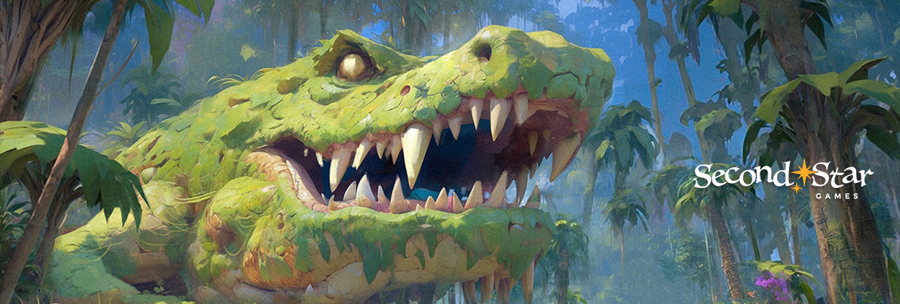
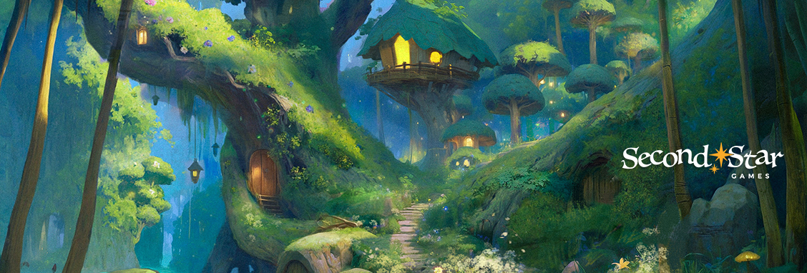

Neverland: A Peter Pan Adventure
Created by: Second Star Games
Neverland: A Peter Pan Adventure is a studio project developed at Second Star Games, reimagining the classic Peter Pan story as an action-adventure game. The project is developed under an exclusive partnership with Great Ormond Street Hospital Charity.
Across a multidisciplinary team, I contributed across several engineering disciplines — from UI and audio systems to platform integration, tooling, and quality assurance.
Team Size
My Roles
Duration
Tech Stack
Context


My Contributions
UI Programming
Audio Programming
Platform Development
QA
Tools Programming
Systems Programming
Technical Breakdown
UI Systems & HUD
The HUD was built entirely in UMG, using a combination of C++ bindings and Blueprint to keep the presentation layer clean and the logic data-driven. Widget animations were driven by game state changes, keeping the interface reactive without polling each frame.
Audio Integration with Wwise
Audio was driven through Wwise, integrated into Unreal Engine via the official Audiokinetic plugin. Gameplay systems communicated with Wwise by posting events and setting game parameters (RTPCs), keeping audio logic decoupled from individual actors and allowing the audio team to iterate in Wwise independently of the game build.
Editor Tooling
To support the wider team, I built a set of Unreal Editor utilities that automated time-consuming pipeline steps. These tools reduced friction in content iteration and allowed designers to make changes without needing programmer support for routine tasks.
What I Learned
Technical
Team & Process
What I'd Do Differently